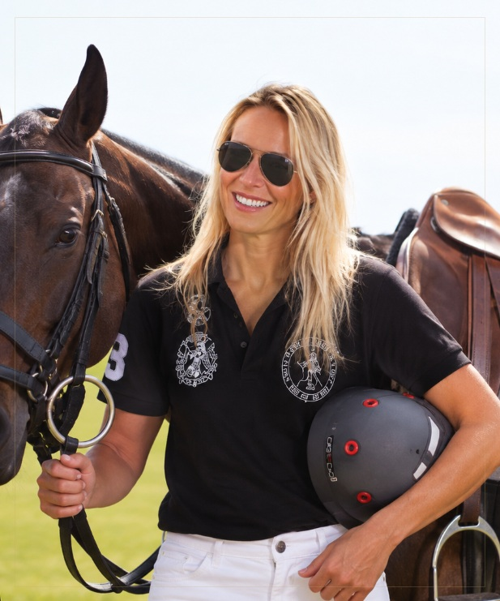
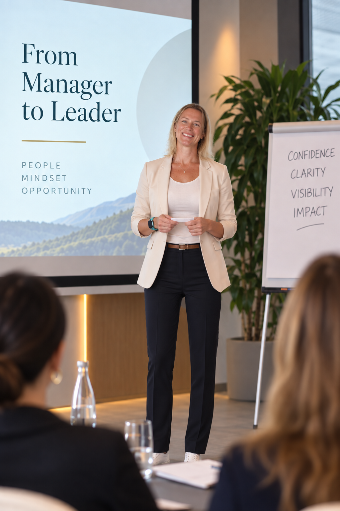
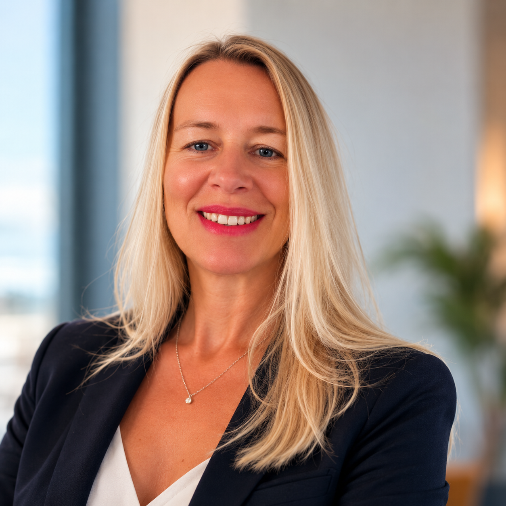

The person
behind the
decisions.
Independent perspective and private advisory for business owners, founders and senior executives.
Discover the approachPerspective
Composure
Independent thinking
The higher you rise, the fewer people you can truly think out loud with.
Employees look to you for direction. Partners have their own perspectives. Family and friends may understand you, but not always the weight of the decisions you carry.
Sometimes, what you need isn't another expert telling you what to do. It's someone independent who listens carefully, challenges your thinking and helps you see what you may be too close to recognise.
beyond the
boardroom.

by two worlds.
A private partnership for people at the top.
I work privately with a select number of business owners, founders and senior executives who value independent thinking, honest conversations and a trusted perspective.
Our work is personal, confidential and shaped by the realities of your life and responsibilities. Whether you are navigating difficult decisions, managing competing expectations or simply need the freedom to think out loud, our conversations create space for clarity.
This is not business consulting. I don't tell you how to run your company. I work with the person responsible for running it.
Honest conversations
Space for clarity
From international business to high-performance psychology.
My approach draws on two environments where performance, responsibility and pressure are part of everyday life: international business and competitive sport.
Over the course of my career, I have worked in General Management, Business Development and commercial leadership across international markets, particularly in Europe and the Middle East.
Alongside my corporate career, I have spent years in competitive polo, both as a player and coach, and trained in sports mental performance.
Elite sport offers valuable insights into the way we think, react and make decisions under pressure. In business, the circumstances may be different, but many of the underlying psychological mechanisms are remarkably similar.
I bring these perspectives together in a private, practical and highly individual approach to working with people in positions of responsibility.


Experience in business. Perspective from sport.
Having held management and commercial leadership roles across Europe and the Middle East, I understand the expectations that come with responsibility and the decisions that cannot simply be delegated.
Competitive polo has given me another lens on focus, composure and judgement when the pressure is real. My work brings both experiences into a personal advisory relationship.
A limited number of private engagements.
I work with a small number of clients to ensure each advisory relationship receives the time, attention and continuity it deserves.
Engagements begin with a private conversation to explore your expectations and whether working together would be mutually beneficial.
Make a private enquiry ↗